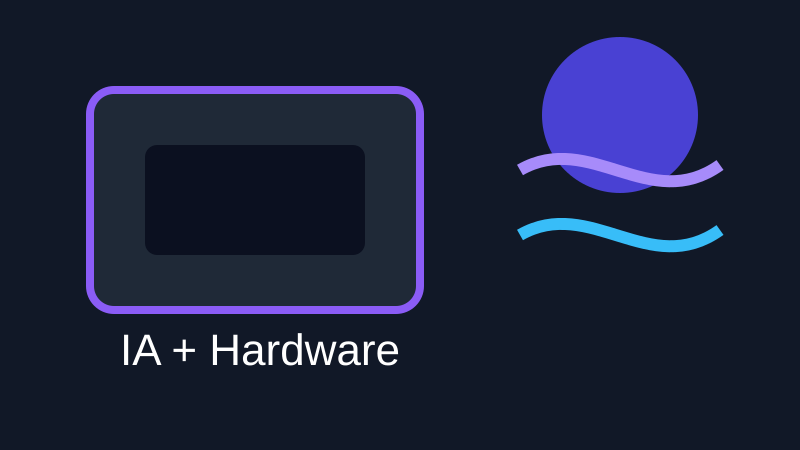
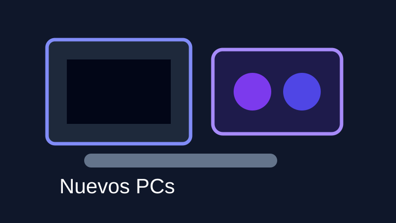

Bienvenido a Proyecto HRA
Proyecto HRA es una plataforma web pensada como punto de encuentro para personas interesadas en la informática, el hardware, la configuración de equipos y los servicios en red.
Esta web reúne en un mismo espacio noticias de informática, foros sobre componentes, videotutoriales, formularios de contacto y apartados dedicados a Windows, Linux y redes.
Top 3 noticias actuales de informática

Nvidia refuerza su apuesta por la IA
La inteligencia artificial sigue empujando el mercado del hardware, especialmente en tarjetas gráficas, centros de datos y nuevos chips especializados.

Los nuevos PCs se centran en la IA
Los fabricantes están dando más importancia a procesadores con NPU, gráficas más potentes y equipos preparados para ejecutar tareas de IA.
La ciberseguridad gana importancia
Los ataques informáticos a empresas, administraciones y servicios online hacen que la protección de datos sea una prioridad cada vez mayor.
Noticias
Espacio reservado para novedades sobre tecnología, hardware y software.
Foro técnico
Sección pensada para dudas y debates sobre componentes de ordenador.
Tutoriales
Zona preparada para contenidos prácticos sobre montaje, configuración y red.